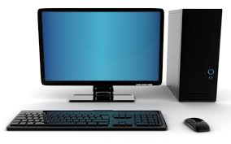
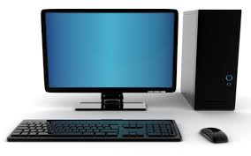
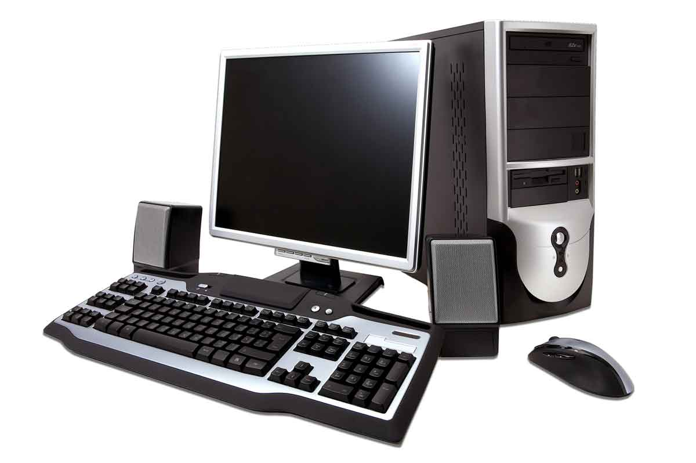
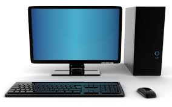

.jpg) 

.jpg)
.jpg)
Today’s generation could never ever imagine in their
wildest dreams about the world, ages before, when there were no computers or any other technologies. So much we have advanced that now every information is just a
click away and is in your hands 24/7. All this advancement was possible only with the introduction of a small device called the Computer.


Basically, computer is a device that accepts the message by the imputer and processes this message and stores the information at the storage devices and later gives an output of the message through the output devices. A simple of the computer. Normally, a computer consists of a processing unit called the Central Processing Unit or the CPU and a form of memory. In the years between 1940 and 1945 were the first electronic digital computers developed. The initial sizes were as big as a room and consumed power as much as today’s personal computers. Initially, computer was related to a person who carries out calculations or computations and as such the word computer was evolved in 1613 and continued till the end of 19th century. Later it as re-described as a machine that carries computations.
The early computers were limited in their functions. It was the fusion of automatic calculation and programmability that produced the first computers that were recognized in 1837. Charles Babbage in 1837 was the first to introduce and design a fully programmed mechanical computer, his analytical engine. Due to limited finances and inability of resisting tinkering with the design, he could not complete his work and it was later completed by his son Henry Babbage who made it into a simplified version of the analytical engine’s computing unit.
The original objective of inventing a computer was to create a fast calculating machine. During the World War II, it became very essential to understand and locate the direction and speed of the enemy weapons. Calculations had to be done accurately and mathematically and without an advanced machine it would not be possible.